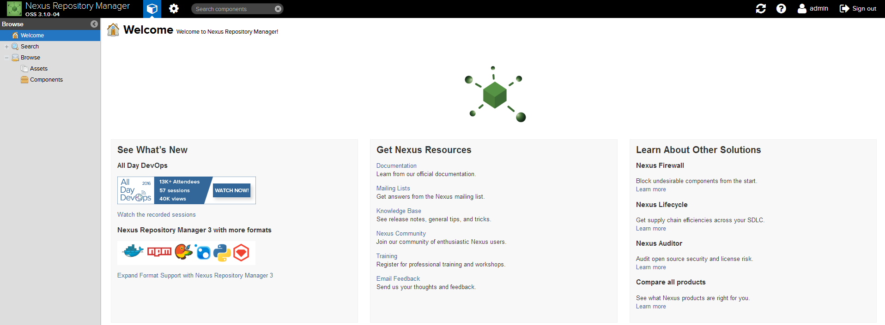

概述
Nexus 是一个强大的仓库管理器，极大地简化了内部仓库的维护和外部仓库的访问。
2016 年 4 月 6 日 Nexus 3.0 版本发布，相较 2.x 版本有了很大的改变：
- 对低层代码进行了大规模重构，提升性能，增加可扩展性以及改善用户体验。
- 升级界面，极大的简化了用户界面的操作和管理。
- 提供新的安装包，让部署更加简单。
- 增加对 Docker, NeGet, npm, Bower 的支持。
- 提供新的管理接口，以及增强对自动任务的管理。
基于Docker安装Nexus
环境
Ubuntu Server
Docker
docker-compose
安装
docker-compose.yml
1
2
3
4
5
6
7
8
9
10
| version: '3.1'
services:
nexus:
restart: always
image: sonatype/nexus3
container_name: nexus
ports:
- 8081:8081
volumes:
- /usr/local/docker/nexus/data:/nexus-data
|
注： 启动时如果出现权限问题可以使用：chmod 777 /usr/local/docker/nexus/data 赋予数据卷目录可读可写的权限
登陆验证
地址：http://ip:port/ 用户名：admin 密码：
ps:密码在docker容其中的/nexus-data/admin.password，请复制登陆，并修改密码(我将密码改为了admin123)。

使用
在项目中使用Maven私服
配置认证信息
在 Maven settings.xml 中添加 Nexus 认证信息(servers 节点下)：
1
2
3
4
5
6
7
8
9
10
11
12
13
14
15
16
| <server>
<id>nexus-releases</id>
<username>admin</username>
<password>admin123</password>
</server>
<server>
<id>nexus-snapshots</id>
<username>admin</username>
<password>admin123</password>
</server>
<server>
<id>nexus</id>
<username>admin</username>
<password>admin123</password>
</server>
|
releases和snapshots区别
- nexus-releases: 用于发布 Release 版本
- nexus-snapshots: 用于发布 Snapshot 版本（快照版）
Release 版本与 Snapshot 定义如下：
1
2
| Release: 1.0.0/1.0.0-RELEASE
Snapshot: 1.0.0-SNAPSHOT
|
- 在项目
pom.xml 中设置的版本号添加 SNAPSHOT 标识的都会发布为 SNAPSHOT 版本，没有 SNAPSHOT 标识的都会发布为 RELEASE 版本。
SNAPSHOT 版本会自动加一个时间作为标识，如：1.0.0-SNAPSHOT 发布后为变成 1.0.0-SNAPSHOT-20180522.123456-1.jar
配置自动化部署
在 pom.xml 中添加如下代码：
1
2
3
4
5
6
7
8
9
10
11
12
| <distributionManagement>
<repository>
<id>nexus-releases</id>
<name>Nexus Release Repository</name>
<url>http://127.0.0.1:8081/repository/maven-releases/</url>
</repository>
<snapshotRepository>
<id>nexus-snapshots</id>
<name>Nexus Snapshot Repository</name>
<url>http://127.0.0.1:8081/repository/maven-snapshots/</url>
</snapshotRepository>
</distributionManagement>
|
注意事项：
- ID 名称必须要与
settings.xml 中 Servers 配置的 ID 名称保持一致。
- 项目版本号中有
SNAPSHOT 标识的，会发布到 Nexus Snapshots Repository, 否则发布到 Nexus Release Repository，并根据 ID 去匹配授权账号。
配置完毕后使用
mvn deploy发布到私服
配置代理仓库
当你本地仓库没有jar时，先从代理仓库下载，没有再从中央仓库下载
1
2
3
4
5
6
7
8
9
10
11
12
13
14
15
16
17
18
19
20
21
22
23
24
25
26
| <repositories>
<repository>
<id>nexus</id>
<name>Nexus Repository</name>
<url>http://127.0.0.1:8081/repository/maven-public/</url>
<snapshots>
<enabled>true</enabled>
</snapshots>
<releases>
<enabled>true</enabled>
</releases>
</repository>
</repositories>
<pluginRepositories>
<pluginRepository>
<id>nexus</id>
<name>Nexus Plugin Repository</name>
<url>http://127.0.0.1:8081/repository/maven-public/</url>
<snapshots>
<enabled>true</enabled>
</snapshots>
<releases>
<enabled>true</enabled>
</releases>
</pluginRepository>
</pluginRepositories>
|
ps：maven私服的id必须和上面setting中配置的id相同，否则会出现认证失败。